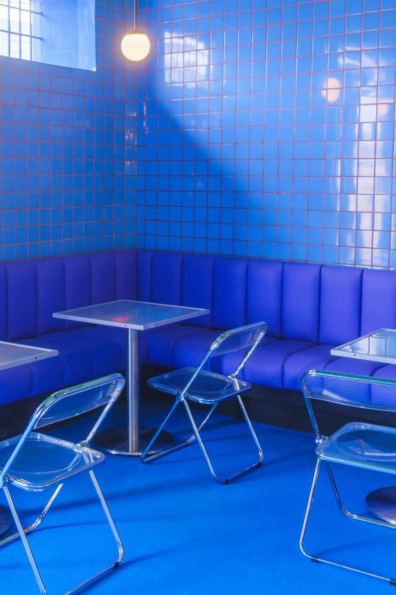

How NZ Politics Works
An interactive guide to New Zealand's political system - how Parliament, MMP, and coalition governments actually work.
Explore →
Tech Roles by Industry
A structured map of how technology roles distribute across industries - who's hiring for what, from finance and healthcare to government and retail.
Explore →
NZ Job Market
A data-driven look at New Zealand's labour market - what's in demand, where growth is concentrated, and how the landscape is shifting.
Explore →
Business Model Atlas
An interactive reference for how businesses create and capture value - from SaaS and marketplaces to asset-heavy and subscription models.
Explore →

The Restaurant Recovery
OpenTable reservation data on dining trends - how restaurant demand shifted through the pandemic and what recovery actually looked like.
Explore →
No pieces in this category yet.